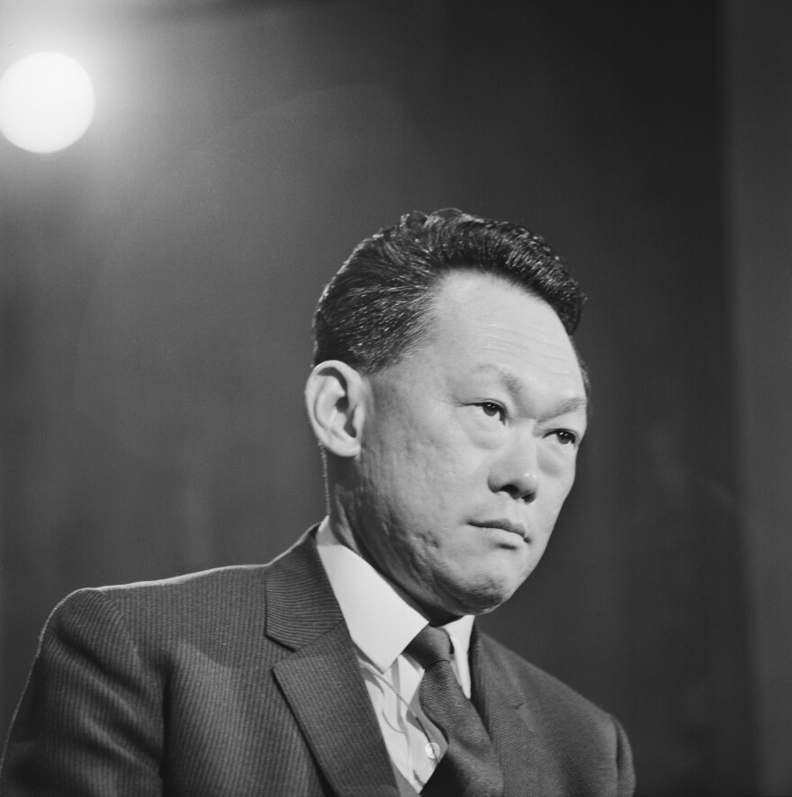

Quote 1
“Self-government was only meaningful if Singapore could survive through unity, discipline, and economic strength.”
Relevance: Highlights key nation-building challenges after self-government.
Learning Objective: Explain how leadership and economic planning supported state survival.
Quote 2
“Our task was to build a stable government and create opportunities so that Singapore could stand on its own.”
Relevance: Connects governance stability to national independence outcomes.
Learning Objective: Identify strategies used by new states to strengthen institutions.